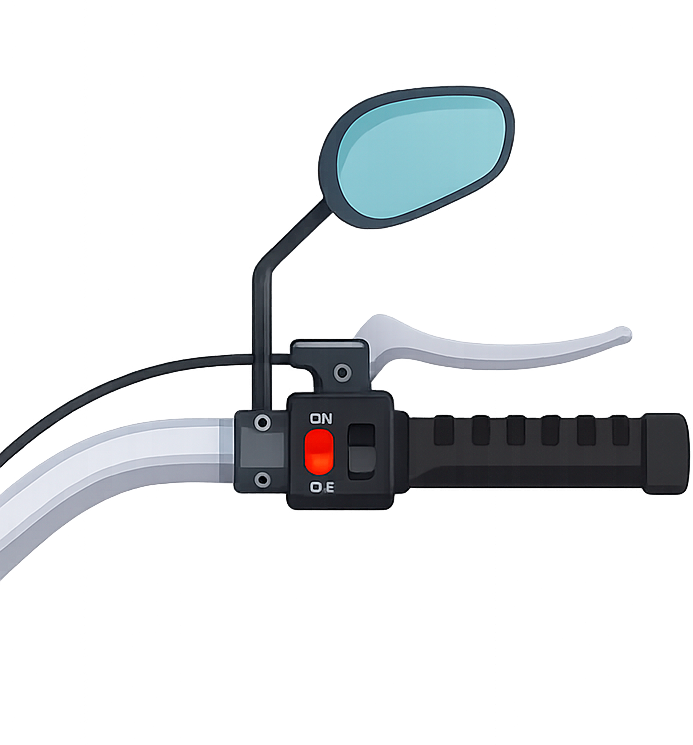
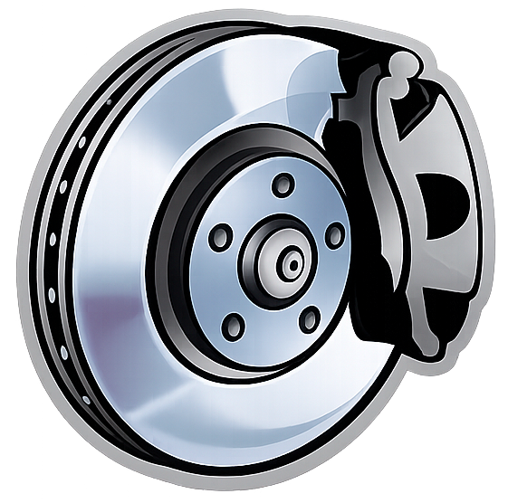

Frenos delanteros
Son los más importantes al detener la moto, ya que soportan la mayor parte del esfuerzo. Un buen sistema de frenos delanteros puede marcar la diferencia en situaciones de emergencia..

aqui una lista de modelos que puden ser de utilidad
- Single disc. ABS.
- Single disc. ABS. 2 piston Nissin caliper.
- Expanding brake (drum brake)
- Single disc
- Double disc. Switchable ABS. 4-piston calipers and sintered metal pads
- Single disc. ABS
- Double disc. ABS. Floating discs. Four-piston calipers. Radially mounted.
- Double disc. Floating discs. Four-piston calipers. Radially mounted. ABS.
- Single disc. Two-piston calipers.
- Single disc. 4-piston calipers.
- Single disc. .
- Single disc. ABS. floating disc with radial-mount Nissin 4-piston caliper.
- Single disc. ABS. Nissin radial-mount two piston calipers.
- Double disc. ABS. Wave disc. Two-piston calipers.
- Double disc. ABS. Radial-mount four-piston calipers.
- Double disc. Floating discs. Four-piston calipers. Radially mounted.
- Single disc. Optional ABS
- Double disc. Wave disc. Two-piston calipers. ABS.
- Double disc. Optional ABS. Floating discs. Four-piston calipers. Radially mounted.
- Double disc. Two-piston calipers. ABS.
- Single disc. Wave-type disc
- Single disc. Hydraulic.
- Single disc. Hydraulic
- Double disc. ABS. Hydraulic.
- Double disc. ABS. Hydraulic. Unified braking system.
- Single disc. Optional drum. Unified Brake System.
- Double disc. Hydraulic.
- Double disc. Hydraulic.4-piston calipers. ABS.
- Double disc. ABS. Hydraulic. 4-piston.
- Double disc. Hydraulic. ABS.
- Double disc
- Double disc. Hydraulic. Two-piston calipers.
- Double disc. ABS. Floating discs. Four-piston calipers.
- Expanding brake (drum brake). Dual
- Single disc. Two-piston calipers. Optional ABS.
- Single disc. Two-piston calipers. ABS.
- Expanding brake (drum brake). Cable actuated
- Single disc. Petal disc with a dual-piston caliper
- Single disc. Dual-piston. Petal disc. Optional ABS.
- Single disc. Dual-piston. Petal disc.
- Single disc. Semi-floating petal discs. Dual piston.
- Single disc. Petal disc with dual-piston caliper
- Single disc. Semi-floating petal discs
- Double disc. Petal discs and two-piston calipers. Optional ABS.
- Double disc. ABS. Four-piston calipers. Radially mounted.
- Double disc. ABS
- Single disc. Optional drum
- Double disc. Dual piston
- Double disc. Two-piston calipers.
- Single disc. ABS. Two-piston caliper.
- Double disc. ABS
- Single disc. Floating rotor, dual-piston calipe
- Single disc. Floating rotor
- Single disc. Floating rotor, two-piston caliper
- Double disc. ABS. Brembo, 4-piston.
- Double disc. Brembo 4-piston. ABS.
- Double disc. 4-piston calipers. ABS.
- Double disc. ABS. Floating discs. 4-piston calipers.
- Double disc. ABS.
- Double disc. ABS. Floating discs. Two-piston calipers.
- Double disc. Switchable ABS. Floating discs. Two-piston calipers.
- Single disc. ABS. 4-piston fixed caliper, radially bolted
- Single disc. 4-piston fixed caliper, radially bolted. ABS.
- Double disc. ABS. Four-piston calipers.
- Double disc. ABS. Four-piston fixed calipers.
- Double disc. ABS, 4-piston radial calipers
- Double disc. 4 piston fixed calipers. ABS.
- Double disc. 4 piston fixed calipers, BMW Motorrad Integral ABS (partially integral)
- Double disc. Brembo M50 Stylema monoblock 4-piston 2 pad calipers, ABS
- Double disc. ABS. Brembo.
- Double disc. ABS. Brembo
- Double disc. ABS. Brembo. Floating discs. Four-piston calipers. Radially mounted.
- Single disc. ABS. Four-piston calipers, Bosch.
- Double disc. Radial 4-piston caliper with Bosch Cornering ABS.
- Single disc. ABS. Four-piston calipers.
- Double disc. Floating discs. Four-piston calipers. Radially mounted. ABS.
- Double disc. ABS. Brembo. 4-piston callipers.
- Double disc. Semi floating, radially mounted Brembo M4 32 mono bloc with four piston calipers
- Double disc. ABS. Radially mounted four-piston brake calipers. Brembo.
- Single disc. Brembo twin-piston floating calliper
- Single disc. Four-piston calipers.
- Single disc. Brake calipers on floating bearings
- Single disc. Brembo 2-piston floating caliper
- Single disc. Brembo twin-piston floating calliper, brake disc
- Single disc. Brake calipers on floating bearings
- Single disc. ABS. Brembo 2-piston floating caliper
- Double disc. ABS. Brembo 2-piston floating caliper
- Single disc. ABS. Brembo 2-piston floating caliper.
- Double disc. Brembo Stylema 4-piston radial monobloc calipers, floating discs, switchable ABS
- Double disc. Brembo M4.30 Stylema® 4-piston radial monobloc calipers, Cornering ABS
- Double disc. Brembo 2-piston floating caliper. ABS.
- Double disc. Brembo 2-piston floating caliper
- Double disc. ABS. Floating discs. Brembo.
- Double disc. Brembo 4-piston fixed calipers, ABS
- Single disc. Brembo four piston fixed caliper, ABS ´
- Double disc. Brembo 4-piston 4-pad radial calipers. ABS.
- Double disc. Brembo 4-piston 4-pad radial calipers. Switchable ABS.
- Single disc. ABS. Floating discs. Brembo 4-piston calipers.
- Double disc. Brembo M50 monobloc calipers
- Double disc. ABS.Stainless steel wave floating wave disc. 4-piston.
- Single disc. ABS. Stainless steel disc with radial 4 piston calliper
- Double disc. ABS. Ø 330 mm floating double disc with aluminium flange Brembo STYLEMA® 4-piston mono-block radial calipers Radial pump and metal braid brake pipe-
- Single disc. Floating calliper. Front wheel only ABS.
- Single disc. 4-piston calliper
- Single disc. Stainless steel disc with floating calliper
- Single disc. CBS
- Single disc. Floating calliper
- Single disc. Stainless steel disc with 2-piston floating calliper
- Single disc. 2 opposing pistons
- Single disc. Floating disc
- Double disc. ABS. Wave disc. Four-piston radial calipers.
- Double disc. Brembo four-piston. ABS.
- Double disc. ABS. Floating stainless steel discs with lightweight stainless steel rotor with 6 studs. Brembo radial callipers with 4 diam. horizontally opposed 32 mm pistons. Sintered pads. Axial pump master cylinder and metal braided brake hoses.
- Double disc. ABS. Floating double disc with aluminium flange Brembo M50 4-piston mono-block radial calipers Radial pump and metal braid brake pipe.
- Single disc. ABS. Stainless steel disc with radial 4 piston calliper.
- Double disc. Optional ABS. 4-piston
- Double disc. ABS. 4-piston.
- Double disc. Optional ABS. 4-piston.
- Single disc. Dual-piston. Optional ABS.
- Double disc. 4 piston caliper. ABS.
- Single disc. ABS. 4-piston
- Single disc. Optional ABS, dual piston
- Double disc. Radially mounted, monoblock, 4-piston caliper. ABS.
- Double disc. ABS. 4-piston
- Single disc. 4-piston fixed. Optional ABS.
- Single disc. ABS. Radially mounted, monoblock, 4-piston caliper
- Single disc. Optional ABS. 4-piston fixed.
- Double disc. ABS. 4 piston.
- Double disc. ABS, 4-piston
- Double disc. ABS. Floating discs. 4 piston caliper.
- Double disc. ABS. Semi-Floating Rotor, 4 Piston Radial Caliper
- Double disc. Optional ABS. Floating discs. Four piston caliper.
- Double disc. Optional ABS. Floating discs.
- Double disc. ABS. Semi-floating rotor. 4-piston calipers.
- Double disc. ABS. Floating discs.
- Double disc. ABS. 4-piston calipers.
- Double disc. ABS. 4-piston calipers. Brembo.
- Single disc. Optional ABS. Two-piston calipers.
- Double disc. 4 pistons. Brembo. ABS.
- Double disc. Brembo. 4 pistons. ABS.
- Double disc. Brembo radial-type, with 4 pistons. ABS.
- Double disc. ABS. Floating disc, 4-piston. Brembo.
- Double disc. ABS. Brembo. Floating disc, 4-piston
- Double disc. ABS. Floating disc, 4-piston, Brembo
- Double disc. Brembo radial-type monobloc, with 4 piston. ABS.
- Double disc. Brembo radial-type monoblo 4 piston. ABS.
- Double disc. Brembo radial-type monobloc, with 4 pistons. ABS.
- Double disc. Brembo radial-type monobloc, 4 pistons. ABS.
- Double disc. Brembo. 4 piston. ABS
- Double disc. Brembo. ABS
- Double disc. Brembo. 4 piston..ABS
- Double disc. Brembo radial-type monobloc with 4 pistons. ABS.
- Double disc. Brembo. ABS.
- Double disc. 4-piston, ABS
- Double disc. Four-piston calipers. ABS.
- Double disc. 2-piston, ABS
- Single disc. 2-piston caliper
- Double disc. 4 pistons caliper. ABS.
- Single disc. Floating double piston calliper
- Single disc. GSK Wave disk.
- Single disc. Magura. Wave disk.
- Single disc. Galfer wave disk.
- Single disc. Twin-piston floating calliper, brake disc
- Single disc. Wave disk.
- Single disc. Hydraulic, wave disk
- Single disc. Galfer disk.
- Single disc. ABS. Brembo twin-piston floating calliper.
- Double disc. ABS.
- Single disc. Brembo caliper with 4 differentiated pistons. ABS.
- Single disc. Brembo caliper with 4 differentiated pistons
- Double disc. Radial Brembo calipers with 4 opposed pistons. ABS.
- Single disc. ABS. Brembo opposed four-piston callipers.
- Double disc. ABS. Floating discs. Brembo.
- Double disc. Stainless steel floating discs, Brembo radial callipers with 4 horizontally opposed pistons.
- Double disc. ABS. Radial Brembo calipers with 4 opposed pistons.
- Single disc. ABS. Brembo caliper with 4 differentiated pistons
- Expanding brake (drum brake). Combined braking system
- Single disc. Combined braking system. Optional drum brake.
- Single disc. Combined braking system. Optional drum.
- Single disc. Optional ABS.
- Single disc. Combined braking system
- Single disc. Petal Disc with floating caliper. ABS.
- Single disc. A
- Single disc. Optional drum brake
- Single disc. ABS. Floating discs. Two-piston calipers.
- Single disc. ABS. Floating discs. 4-piston calipers.
Frenos traseros
Ayudan a estabilizar la moto al frenar. Aunque tienen menos fuerza que los delanteros, son esenciales para un frenado equilibrado..

aqui una lista de modelos que puden ser de utilidad
- Single disc. ABS
- Single disc
- Expanding brake
- Expanding brake (drum brake)
- Single disc. Switchable ABS. 2-piston caliper and sintered metal pads.
- Single disc. ABS. Single-piston caliper.
- Single disc. Single-piston caliper. ABS.
- Single disc. ABS. Wave disc.
- Single disc. ABS Single-piston caliper.
- Single disc. Dual-piston caliper. ABS.
- Single disc. Optional ABS
- Single disc. Wave disc. Single-piston caliper. ABS.
- Single disc. Optional ABS. Single-piston caliper.
- Single disc. Wave-type disc
- Single disc. ABS. Hydraulic.
- Single disc. ABS. Hydraulic
- Expanding brake (drum brake). ABS
- Double disc. Hydraulic.
- Sealed multidisc
- Single disc. Hydraulic single disc. ABS.
- Single disc. Hydraulic. ABS.
- Single disc. ABS. Petal-style disc. Single-piston caliper.
- Single disc. Hydraulic.
- Single disc. Single piston. Optional ABS..
- Single disc. Single piston. ABS..
- Expanding brake (drum brake). Rod actuated
- Single disc. Petal disc with single-piston caliper
- Single disc. Single-piston. Petal disc. Optional ABS.
- Single disc. Single-piston. Petal disc.
- Single disc. Petal disc. Single-piston caliper.
- Single disc. Single-piston caliper.
- Single disc. Petal disc and single piston caliper. Optional ABS.
- Single disc. Single piston
- Single disc. Single-piston
- Single disc. Two-piston caliper
- Single disc. ABS. Nissin, 1-piston.
- Single disc. Nissin-1 piston. ABS.
- Single disc. 1-piston floating calipers. ABS.
- Single disc. ABS. Floating disc. 1-piston floating calipers.
- Single disc. ABS.
- Single disc. ABS. Floating disc. Single-piston caliper.
- Single disc. Switchable ABS. Floating disc. Single-piston caliper.
- Single disc. ABS. single-piston floating caliper.
- Single disc. Single-piston floating caliper. ABS.
- Single disc. ABS. Two-piston calipers.
- Single disc. ABS. Floating disc. Two-piston fixed caliper.
- Single disc. ABS. Floating disc. Two-piston calipers.
- Single disc. ABS, dual-piston floating caliper
- Single disc. 4 piston fixed calipers. ABS.
- Single disc. Single disc brake, fixed caliper. BMW Motorrad Integral ABS.
- Single disc. ABS. Brembo Two-piston calipers.
- Single disc. ABS. Brembo.
- Single disc. ABS. Brembo
- Single disc. ABS. Brembo. Floating disc. Single-piston caliper.
- Single disc. 1-piston floating caliper with Bosch Cornering ABS.
- Single disc. Two-piston calipers. ABS.
- Single disc. ABS. Brembo. 2-piston calliper.
- Single disc. ABS. Brembo Two-piston calipers.
- Single disc. Brembo 2-piston
- Single disc. ABS. Two-piston brake caliper. fixed brake disc. Brembo.
- Single disc. Brembo single-piston floating calliper
- Single disc. Two-piston calipers.
- Single disc. Brake calipers on floating bearings
- Single disc. Brembo single-piston floating calliper, brake disc
- Single disc. Brembo with single pistons
- Single disc. ABS. Nissin single piston floating caliper.
- Single disc. ABS. Nissin 2-piston floating caliper
- Single disc. ABS. Nissin 2-piston floating caliper.
- Single disc. Brembo single piston caliper, switchable ABS
- Single disc. Brembo M4.32 4-piston monobloc caliper, Cornering ABS
- Single disc. Brembo 2-piston floating caliper. ABS.
- Single disc. Brembo 2-piston floating caliper ABS
- Single disc. ABS. Two-piston calipers. Brembo.
- Single disc. Nissin 2-piston floating caliper ABS
- Single disc. Nissin 2-piston floating caliper, ABS.
- Single disc. Brembo single 2-piston sliding caliper. ABS.
- Single disc. Brembo single 2-piston sliding caliper. Switchable ABS.
- Single disc. ABS. Floating disc. Nissin 2-piston calipers.
- Single disc. ABS. Four-piston radial calipers..
- Single disc. Stainless steel disc and calliper with single 30 mm piston.
- Single disc. ABS. Single 30 mm piston
- Single disc. ABS. Brembo Ø 32 mm 2 isolated piston caliper pump with integrated tank and metal braid pipp
- Single disc. ABS. Brembo Ø 32 mm 2 isolated piston caliper Pump with integrated tank and metal braid pipe
- Single disc. Floating calliper
- Single disc. Stainless steel disc with floating calliper
- Single disc. ABS. Wave disc. Single piston caliper.
- Single disc. Brembo. ABS.
- Single disc. ABS. Brembo floating calliper.
- Single disc. ABS. Brembo Ø 32 mm 2 isolated piston caliper Pump with integrated tank and metal braid pipe.
- Single disc. Optional ABS. 4-piston
- Single disc. ABS. 2-piston.
- Single disc. Optional ABS. 2-piston.
- Single disc. Dual-piston. Optional ABS.
- Single disc. 2-piston caliper. ABS.
- Single disc. ABS. 2-piston floating.
- Single disc. Optional ABS, dual piston
- Single disc. Floating, single piston caliper. ABS.
- Single disc. ABS. 4-piston
- Single disc. 2-piston floating. Optional ABS.
- Single disc. ABS. Floating, single piston caliper
- Single disc. Optional ABS. 2-piston
- Single disc. ABS. Integrated park brake.
- Single disc. ABS. 2-piston floating
- Single disc. ABS, 4-piston
- Single disc. Single-piston. Optional ABS.
- Single disc. ABS. Floating disc. 2-piston caliper.
- Single disc. ABS. Floating Rotor, 2 Piston Caliper.
- Single disc. Optional ABS. Floating Rotor. 2 piston caliper
- Single disc. Optional ABS. Floating disc.
- Single disc. ABS. Floating rotor. 2-piston caliper.
- Single disc. ABS. Floating disc.
- Single disc. ABS. 2-Piston Calipers.
- Single disc. ABS. 2-piston Calipers. Brembo.
- Single disc. 2 pistons. Brembo. ABS.
- Single disc. Brembo. 2 pistons. ABS.
- Single disc. Brembo with 2 pistons.ABS.
- Single disc. ABS. 4-piston. Brembo.
- Single disc. ABS. Brembo. 2-piston
- Single disc. ABS. 2-piston. Brembo.
- Single disc. ABS. 2-piston, Brembo.
- Single disc. Brembo with 2 pistons. ABS.
- Single disc. Brembo.2 pistons. ABS.
- Single disc. ABS.
- Single disc. Brembo. 2 piston. ABS
- Single disc. Brembo. ABS
- Single disc. Brembo.2 piston. ABS
- Single disc. Single piston calliper, ABS
- Single disc. 2 pistons caliper. ABS.
- Single disc. Floating double piston calliper
- Single disc. GSK Wave disk.
- Single disc. Magura. Wave disk.
- Single disc. Galfer ave disk.
- Single disc. Single-piston floating calliper, brake dis
- Single disc. Wave disk.
- Single disc. Brembo single-piston floating calliper, brake dis
- Single disc. Hydraulic, wave disk
- Single disc. Single-piston floating calliper, brake disc
- Single disc. Galfer disk.
- Single disc. ABS. Brembo single-piston floating calliper,
- Single disc. Floating disc. Two-piston calipers. ABS.
- Single disc. Floating disc. Two-piston calipers.
- Single disc. Floating 2 pistons caliper. ABS.
- Single disc. ABS. 2 pistons caliper.
- Single disc. ABS. Floating 2 pistons caliper.
- Single disc. ABS. Floating disc. Brembo.
- Single disc. Stainless steel fixed disc, Brembo floating calliper with 2 parallel pistons.
- Single disc. ABS. Floating 2 parallel pistons Brembo caliper
- Expanding brake (drum brake). Anti-Skid Braking System
- Single disc. Optional 130 mm drum
- Single disc. Petal Disc with floating caliper. ABS.
- Single disc. ABS. Optional drum brake.
- Single disc. Optional drum
- Single disc. Hydraulic